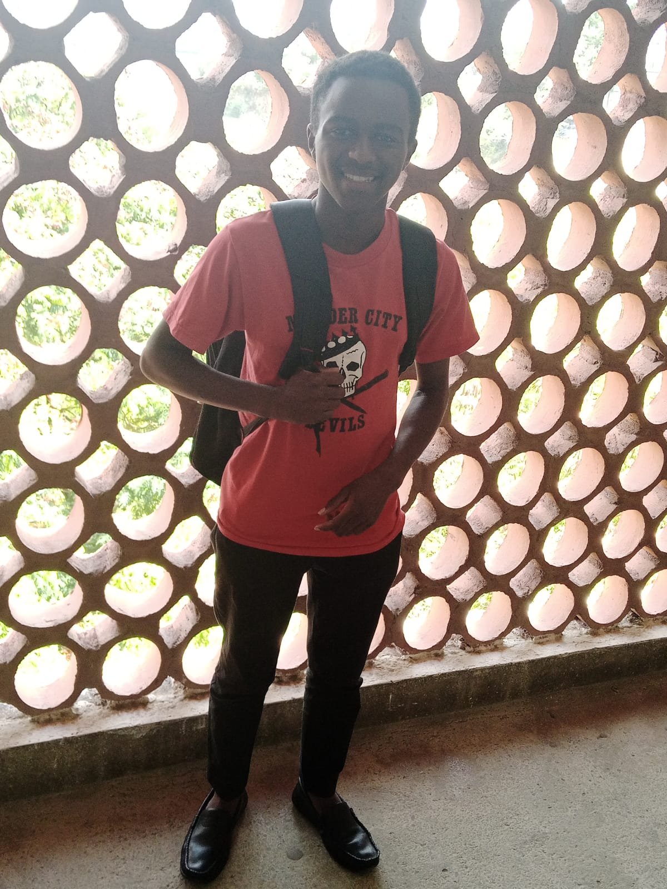
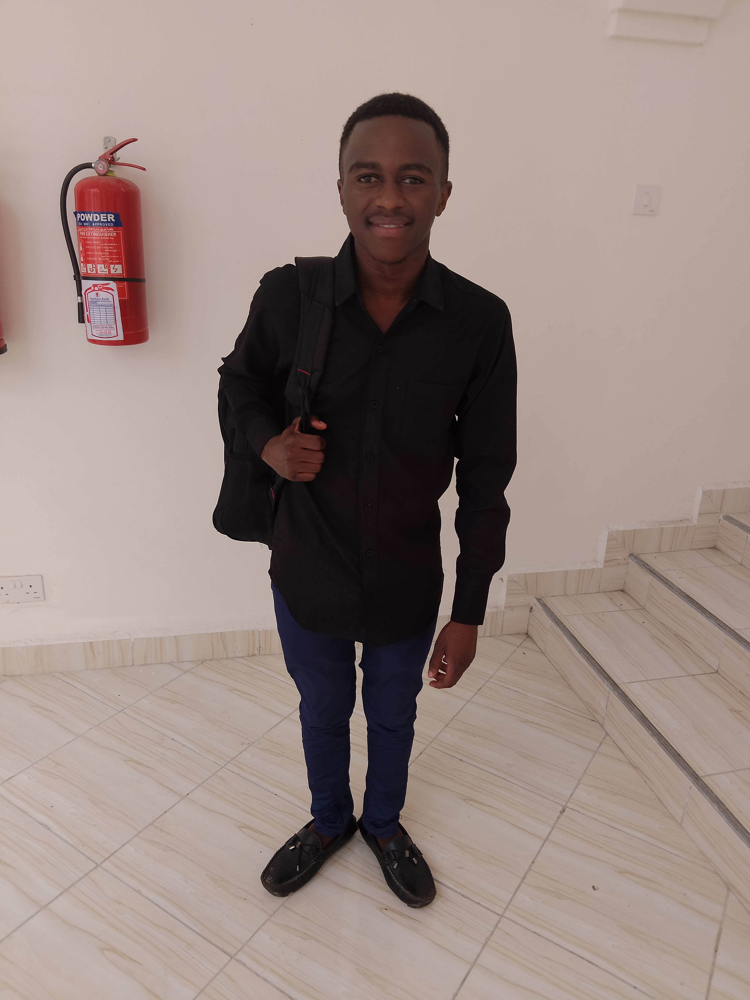

Verse-Connect
This is where we make the potential employer meet the competent employee

- 
- 

Are you the employee needed for that awesome paying job in your field of study?...Then look no more
Verse-connect helps you connect with potential employers who are in need of your services.
Furthermore it's a platform that encourages people to share ideas and get to iteract allittle bit by providing a
Verse-community.
Meet Vincent
Add commitment and determination to your goals and you will find that you are willing
to take continuous and consistent action toward making your dreams a reality, despite any obstacles in your path,
including difficult times.
Having goals and staying committed to them will keep your focus on the things that you have identified as essential
to reaching your desired outcomes. Too often, we expend precious time on issues that have nothing
to do with what we really want in our lives. We get distracted by focusing on what others are doing and achieving,
and striving to do the same.
Having a vision and a supporting plan of what you want to achieve in life
is necessary if you ever want to arrive at the correct destination.
Recontez Dennis
Success does not have a definite definition as it varies from one person to another.
Success could be simply defined as the satisfaction a person gets by achieving his or her goal.
Success does not come without any problems as the road to success is filled with many hurdles.
To achieve success one needs to be determined in life and have a plan to accomplish that goal.
Success is directly proportional
to the amount of hard work and the time you have invested in achieving that goal. Hard work here to work physically
which makes you tired but it just means that you have to prioritize important things that will make you successful
and work towards it. Failure is the most important step in achieving your goals. Many of us fear as we think that it
will not make us successful but sometimes failing is important as it helps in determining your path. Imagine what would
have happened if Thomas Edison hesitated while he worked on discovering light? the world would have still been dark.
Don’t fear failure, face it as it will help in achieving success.
Add commitment and determination to your goals and you will find that you are willing
to take continuous and consistent action toward making your dreams a reality, despite any obstacles in your path,
including difficult times.
Having goals and staying committed to them will keep your focus on the things that you have identified as essential
to reaching your desired outcomes. Too often, we expend precious time on issues that have nothing
to do with what we really want in our lives. We get distracted by focusing on what others are doing and achieving,
and striving to do the same.
Having a vision and a supporting plan of what you want to achieve in life
is necessary if you ever want to arrive at the correct destination.
Recontez Dennis
Success does not have a definite definition as it varies from one person to another.
Success could be simply defined as the satisfaction a person gets by achieving his or her goal.
Success does not come without any problems as the road to success is filled with many hurdles.
To achieve success one needs to be determined in life and have a plan to accomplish that goal.
Success is directly proportional
to the amount of hard work and the time you have invested in achieving that goal. Hard work here to work physically
which makes you tired but it just means that you have to prioritize important things that will make you successful
and work towards it. Failure is the most important step in achieving your goals. Many of us fear as we think that it
will not make us successful but sometimes failing is important as it helps in determining your path. Imagine what would
have happened if Thomas Edison hesitated while he worked on discovering light? the world would have still been dark.
Don’t fear failure, face it as it will help in achieving success.